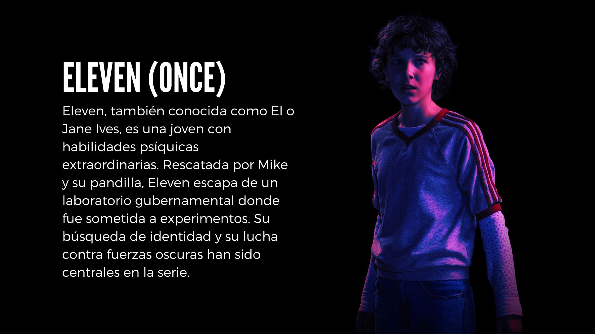
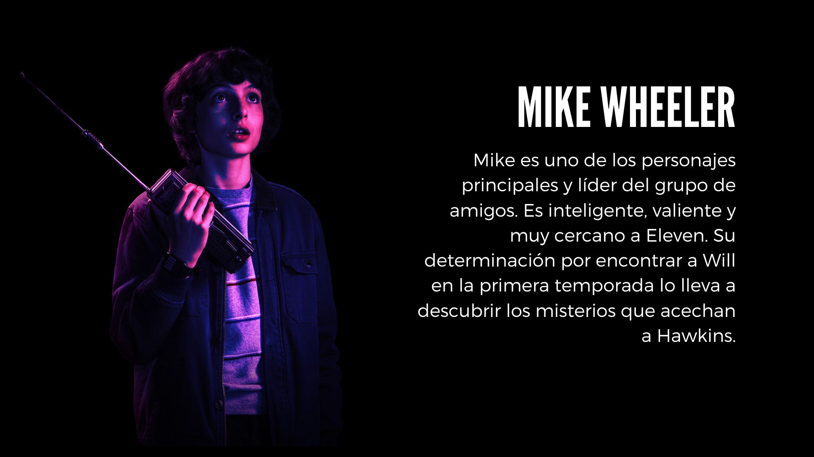
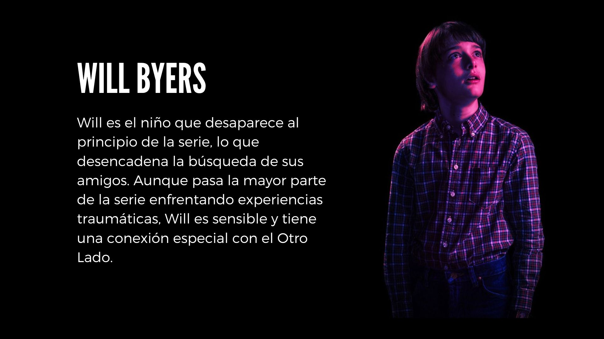
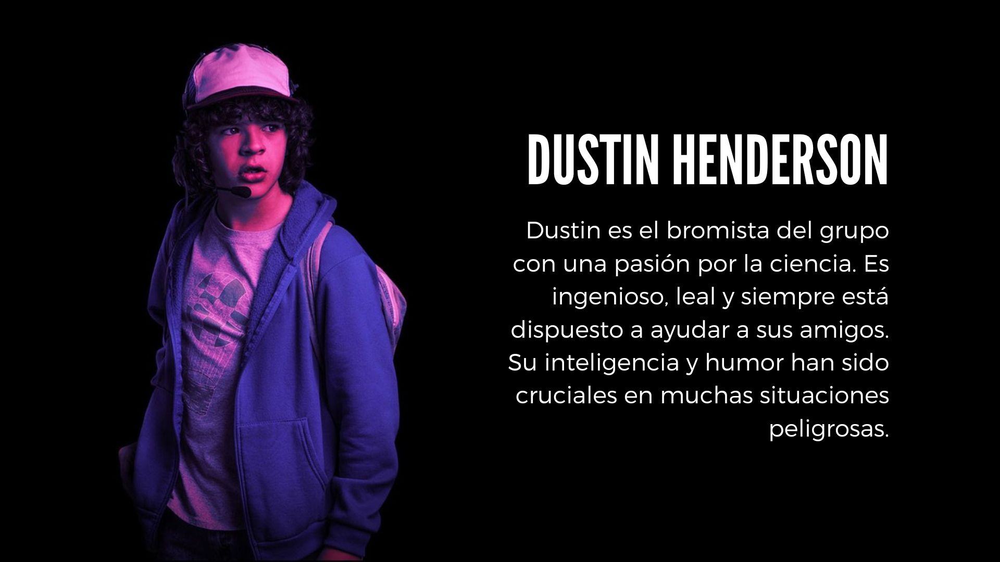
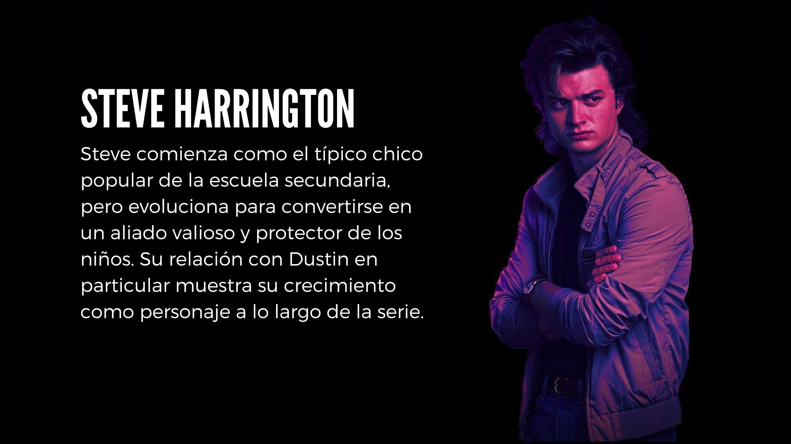

Stranger Things es una serie de televisión web estadounidense que combina drama, suspenso, ciencia ficción y terror. Fue creada por los hermanos Matt y Ross Duffer y se estrenó en Netflix el 15 de julio de 2016. La historia está ambientada en la década de los 80 en el pueblo ficticio de Hawkins, Indiana, Estados Unidos. Todo comienza cuando un niño de 12 años llamado Will Byers desaparece misteriosamente sin dejar rastro en 1983. A medida que la trama se desarrolla, los residentes de Hawkins se enfrentan a una dimensión alternativa hostil conocida como Upside Down. Esta dimensión se conecta con el mundo normal a través de una puerta abierta por una instalación de experimentación humana cercana. El reparto incluye a Winona Ryder, David Harbour, Finn Wolfhard, Millie Bobby Brown y otros talentosos actores
- 
- 
- 
-

- 
- 
-
Temporada 1
La primera temporada presenta a un grupo de niños en los años 80 en Hawkins, Indiana. Uno de ellos, Will Byers, desaparece misteriosamente. Mientras sus amigos lo buscan, encuentran a una niña con poderes telequinéticos llamada Eleven, quien ha escapado de un laboratorio cercano. Descubren que Will está atrapado en el "Upside Down", un mundo paralelo aterrador. El jefe de policía local, Jim Hopper, y la madre de Will, Joyce, lideran la búsqueda mientras se enfrentan a fuerzas sobrenaturales y al siniestro laboratorio gubernamental.

-
Temporada 2
En la segunda temporada, Will ha sido rescatado, pero sufre de traumas por su tiempo en el Upside Down. El grupo enfrenta nuevas amenazas cuando descubren que un ser gigante llamado Mind Flayer está intentando invadir Hawkins. Eleven, quien había desaparecido al final de la temporada anterior, regresa y descubre más sobre su pasado. Además, nuevos personajes como Max y su hermanastro abusivo, Billy, se suman a la trama. La temporada culmina con un enfrentamiento épico en el baile de invierno.

-
Temporada 3
En la tercera temporada, la pandilla enfrenta una nueva amenaza en forma de un centro comercial recién inaugurado, detrás del cual se esconde un experimento secreto del gobierno. Mientras tanto, las relaciones personales se complican, especialmente cuando Max y Eleven se unen más, y Nancy y Jonathan investigan una conspiración encubierta. Los amigos enfrentan al Mind Flayer una vez más, esta vez en una batalla épica en el centro comercial de Starcourt. La temporada termina con emocionantes revelaciones y cambios significativos en la vida de los personajes.

-
Temporada 4
Con la reaparición de un viejo enemigo, el equipo se enfrenta a su desafío más oscuro hasta el momento. Secretos enterrados salen a la luz y la lucha por Hawkins alcanza nuevas alturas mientras el pasado y el presente se entrelazan de manera peligrosa.

El tráiler de la primera temporada de "Stranger Things" muestra la desaparición de un niño en un pueblo de los años 80. Con elementos sobrenaturales y la búsqueda desesperada de su madre, el avance deja a los espectadores intrigados sobre el destino del niño y los secretos del pueblo.
El tráiler de la segunda temporada de "Stranger Things" continúa la historia del misterioso pueblo de Hawkins. Mientras los residentes intentan recuperarse de los eventos sobrenaturales del pasado, se enfrentan a nuevas amenazas provenientes del Mundo del Revés.
El tráiler de la tercera temporada de "Stranger Things" muestra un verano lleno de aventuras y peligros en Hawkins. Los protagonistas enfrentan nuevos desafíos mientras luchan contra fuerzas sobrenaturales que amenazan con destruir su tranquila vida en el pueblo.
El tráiler de la cuarta temporada de "Stranger Things" revela un nuevo y oscuro capítulo en la historia de Hawkins. Los personajes se encuentran enfrentando peligros aún mayores mientras exploran nuevos misterios y luchan por sobrevivir en un mundo cada vez más amenazante y desconocido.